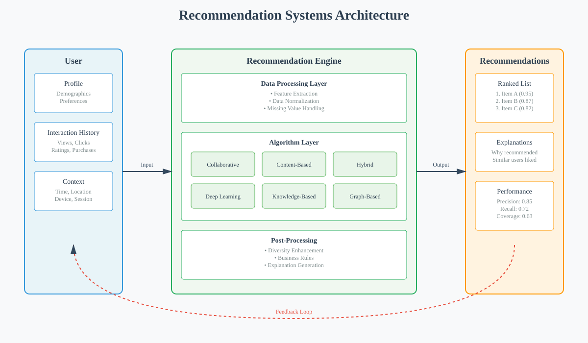
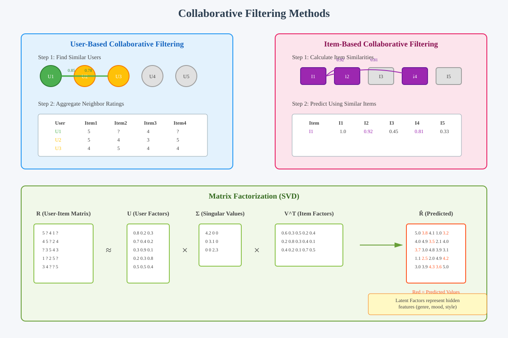
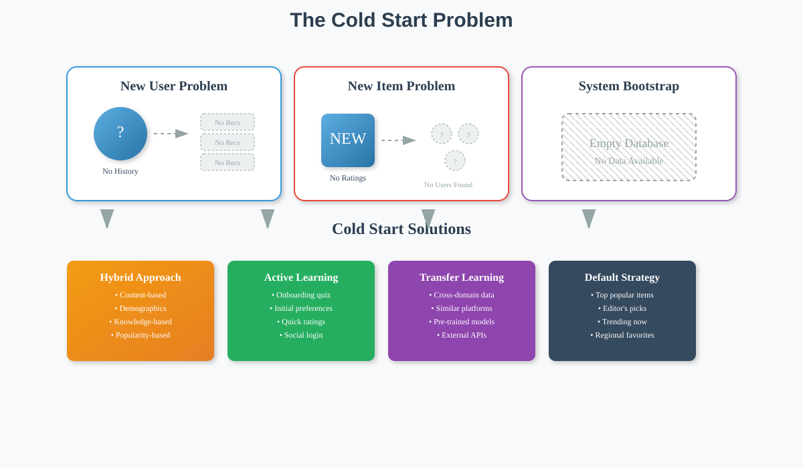

Recommendation Systems: Principles and Applications
📚 Quick Navigation
- Introduction
- Core Concepts
- How Recommendation Systems Work
- Key Challenges
- Business Applications
- Implementation Approaches
- Real-World Examples
- Mathematical Foundations
- Best Practices
- References & Further Reading
Introduction
Recommendation systems represent a fundamental class of prediction problems in machine learning and data science. At their core, they aim to understand individual preferences, choices, and personalized behaviors to make relevant suggestions. These systems have become ubiquitous in our digital lives, powering everything from e-commerce platforms to streaming services and social networks.
Why Recommendation Systems Matter:
- Scale of Impact: They influence billions of daily decisions across various platforms
- Economic Value: Drive significant revenue through improved conversion rates and user engagement
- User Experience: Enhance satisfaction by reducing information overload and discovery time
- Business Intelligence: Provide insights into consumer behavior and market trends

The evolution from traditional word-of-mouth recommendations to sophisticated algorithmic systems represents a paradigm shift in how we discover and consume content, products, and services.
Core Concepts
Understanding recommendation systems requires grasping several fundamental concepts that underpin their operation and effectiveness.
Essential Components:
- Users: Individuals whose preferences we aim to understand and predict
- Items: Products, content, or services being recommended
- Interactions: Historical data capturing user-item relationships
- Context: Environmental factors influencing preferences (time, location, device)
- Feedback: Explicit (ratings, reviews) or implicit (clicks, views, purchases) signals
Types of Recommendation Problems:
- Rating Prediction: Estimating how a user would rate an unseen item
- Ranking: Ordering items by relevance for a specific user
- Top-N Recommendations: Selecting the best subset of items to present
- Group Recommendations: Finding items suitable for multiple users simultaneously
Key Distinctions:
- Personalized vs Non-personalized: Tailored to individuals vs general popularity
- Memory-based vs Model-based: Direct use of data vs learned representations
- Content-based vs Collaborative: Item features vs user behavior patterns
- Batch vs Real-time: Offline processing vs instant recommendations
How Recommendation Systems Work
Modern recommendation systems operate on principles that mirror human decision-making processes but at unprecedented scale and sophistication.
Fundamental Mechanism:
At their core, recommendation systems work by identifying patterns in user preferences and leveraging these patterns to predict future interests. The basic insight is elegantly simple: people with similar tastes in the past are likely to have similar preferences in the future.

Collaborative Filtering Approach:
Collaborative filtering, one of the most successful recommendation techniques, filters or predicts preferences through collaboration among users. This approach can be understood through a simple analogy: just as we historically called friends with similar tastes for suggestions, collaborative filtering finds users with similar preferences computationally.
The Process:
- Data Collection: Gather user interaction data (ratings, clicks, purchases)
- Similarity Computation: Calculate relationships between users or items
- Neighborhood Formation: Identify similar users or items
- Prediction Generation: Aggregate preferences from neighbors
- Recommendation Delivery: Present top predictions to users
Mathematical Foundation:
The collaborative filtering prediction can be expressed as:
r̂ᵤᵢ = μ + bᵤ + bᵢ + qᵢᵀpᵤ
Where: - r̂ᵤᵢ = predicted rating for user u on item i - μ = global average rating - bᵤ = user bias term - bᵢ = item bias term - qᵢ = item feature vector - pᵤ = user preference vector
Transparency Requirements:
Modern systems must explain their recommendations to build user trust. For example: - "Frequently bought together" for complementary products - "Because you watched..." for content recommendations - "Customers who viewed this also viewed..." for discovery
Key Challenges
Building effective recommendation systems involves overcoming several significant challenges that can impact performance and user satisfaction.

Major Challenges:
1. Cold Start Problem:
- New User Problem: No historical data for preference learning
- New Item Problem: No interaction history for popularity assessment
- System Bootstrap: Initial deployment without any data
Solutions:
- Hybrid Approaches: Combine content-based and collaborative methods
- Knowledge Transfer: Leverage data from related domains
- Active Learning: Strategic questioning to quickly learn preferences
- Default Strategies: Use popularity or demographic-based recommendations
2. Data Sparsity:
- Challenge: Most users interact with tiny fraction of available items
- Impact: Difficulty in finding similar users or items
- Mitigation: Matrix factorization, deep learning embeddings
3. Scalability:
- Computational Complexity: Processing millions of users and items
- Real-time Requirements: Sub-second response times expected
- Solutions: Distributed computing, approximate algorithms, caching
4. Self-fulfilling Prophecy:
The feedback loop where recommendations influence future behavior, potentially: - Creating Filter Bubbles: Users see increasingly narrow content - Reducing Serendipity: Fewer surprising discoveries - Amplifying Popularity Bias: Rich-get-richer phenomenon
Mitigation Strategies:
- Diversity Injection: Deliberately include varied recommendations
- Exploration vs Exploitation: Balance known preferences with discovery
- Fairness Constraints: Ensure equitable exposure for all items
Business Applications
Recommendation systems have become integral to numerous business models across diverse industries.

E-commerce Applications:
- Product Recommendations: Amazon's "Customers who bought this also bought"
- Cross-selling: Suggesting complementary products
- Upselling: Promoting premium alternatives
- Personalized Search: Ranking results based on user history
Entertainment & Media:
- Video Streaming: Netflix's personalized homepage
- Music Discovery: Spotify's Discover Weekly playlists
- News Curation: Personalized news feeds
- Gaming: Suggesting new games based on play history
Social Platforms:
- Friend Suggestions: LinkedIn's "People You May Know"
- Content Discovery: TikTok's For You Page
- Dating Matches: eHarmony's compatibility matching
- Group Formation: Suggesting communities or interests
Advertising Technology:
- Targeted Advertising: Showing relevant ads based on behavior
- Retargeting: Re-engaging users with previously viewed items
- Lookalike Audiences: Finding similar users for campaigns
- Bid Optimization: Predicting conversion likelihood
Financial Services:
- Investment Recommendations: Robo-advisors suggesting portfolios
- Credit Products: Personalized loan offers
- Fraud Detection: Identifying anomalous transactions
- Customer Retention: Predicting and preventing churn
Implementation Approaches
Different recommendation scenarios call for various implementation strategies, each with distinct advantages and trade-offs.
Content-Based Filtering:
Approach: - Analyze item features and characteristics - Build user profiles based on preferred features - Recommend items with similar attributes
Advantages: - No cold start problem for new items - Transparent and explainable recommendations - No need for community data
Limitations: - Limited to item features available - Tends to over-specialize - Difficult to capture subjective qualities
Collaborative Filtering:
Memory-Based Methods:
- User-Based CF: Find similar users, recommend their preferences
- Item-Based CF: Find similar items to those user liked
Model-Based Methods:
- Matrix Factorization: Decompose user-item matrix into latent factors
- Deep Learning: Neural networks learning complex patterns
- Clustering: Group similar users or items
Hybrid Systems:
Combining multiple approaches to leverage their strengths:
Score(u,i) = α × ContentScore(u,i) + β × CollaborativeScore(u,i) + γ × KnowledgeScore(u,i)
Where α, β, γ are weighting parameters optimized for performance.
Knowledge-Based Systems:
- Rule-Based: Expert-defined recommendation logic
- Case-Based: Find similar past cases
- Ontology-Driven: Use domain knowledge structures
Real-World Examples
Examining successful implementations provides valuable insights into practical recommendation system design.
Netflix: Entertainment Personalization
Approach: - Multiple algorithms for different UI components - A/B testing for continuous improvement - Contextual bandits for explore-exploit balance
Key Innovations: - Artwork personalization based on viewing history - Time-decay factors for recent preferences - Multi-stakeholder optimization (user satisfaction + content diversity)
Amazon: E-commerce Pioneer
Techniques: - Item-to-item collaborative filtering - Real-time recommendation updates - Multi-objective optimization (relevance + profit margin)
Success Factors: - Massive scale data collection - Extensive personalization throughout site - Clear recommendation explanations
Spotify: Music Discovery
Methods: - Collaborative filtering for Discover Weekly - Natural language processing for playlist generation - Audio analysis for content-based recommendations
Unique Features: - Temporal patterns (morning vs evening preferences) - Social integration (friend activity) - Contextual playlists (workout, focus, sleep)
Pandora: The Music Genome Project
Initial Approach: - Expert annotation of musical characteristics - Content-based recommendation engine - Manual curation of attributes
Evolution: - Incorporation of user feedback signals - Hybrid system combining content and collaboration - Learning from implicit feedback (skips, replays)
Mathematical Foundations
The theoretical underpinnings of recommendation systems draw from various mathematical disciplines.
Similarity Metrics:
Cosine Similarity:
sim(u,v) = cos(θ) = (u·v)/(||u||×||v||)
Pearson Correlation:
r = Σ[(xᵢ-x̄)(yᵢ-ȳ)] / √[Σ(xᵢ-x̄)²×Σ(yᵢ-ȳ)²]
Jaccard Index:
J(A,B) = |A∩B| / |A∪B|
Matrix Factorization:
Singular Value Decomposition (SVD):
R ≈ U × Σ × Vᵀ
Where: - R = user-item rating matrix - U = user feature matrix - Σ = diagonal matrix of singular values - V = item feature matrix
Optimization Objectives:
Mean Squared Error:
MSE = (1/n) × Σ(rᵤᵢ - r̂ᵤᵢ)²
Ranking Metrics:
NDCG@k = DCG@k / IDCG@k
Where: - DCG = Discounted Cumulative Gain - IDCG = Ideal DCG
Regularization:
L = Σ(rᵤᵢ - r̂ᵤᵢ)² + λ(||pᵤ||² + ||qᵢ||²)
Best Practices
Successful recommendation system deployment requires adherence to established best practices and continuous optimization.
System Design Principles:
- Start Simple: Begin with basic algorithms, iterate based on performance
- Measure Everything: Track both online and offline metrics
- A/B Test Rigorously: Validate improvements through controlled experiments
- Plan for Scale: Design architecture for growth from day one
Data Management:
- Quality Over Quantity: Clean, relevant data beats volume
- Privacy First: Implement strong data protection measures
- Feedback Loops: Design systems to learn from recommendations
- Cold Start Strategy: Have fallback approaches for new entities
Algorithm Selection:
- Context Matters: Choose algorithms based on domain characteristics
- Ensemble Methods: Combine multiple algorithms for robustness
- Regular Retraining: Keep models fresh with recent data
- Interpretability: Balance performance with explainability
User Experience:
- Transparency: Explain why items are recommended
- Control: Allow users to influence recommendations
- Diversity: Include unexpected but relevant suggestions
- Performance: Ensure fast response times
Evaluation Framework:
Offline Metrics: - Accuracy (RMSE, MAE) - Ranking (Precision@K, Recall@K) - Coverage and Diversity - Novelty and Serendipity
Online Metrics: - Click-through Rate (CTR) - Conversion Rate - User Engagement Time - Revenue Impact
Ethical Considerations:
- Fairness: Avoid discriminatory recommendations
- Accountability: Take responsibility for recommendation impact
- Transparency: Be open about how systems work
- User Agency: Respect user choices and privacy
References & Further Reading
Foundational Papers:
- Koren, Y., Bell, R., & Volinsky, C. (2009). Matrix Factorization Techniques for Recommender Systems
- Sarwar, B., et al. (2001). Item-based Collaborative Filtering Recommendation Algorithms
- Adomavicius, G., & Tuzhilin, A. (2005). Toward the Next Generation of Recommender Systems
Books:
- Recommender Systems: The Textbook by Charu C. Aggarwal
- Practical Recommender Systems by Kim Falk
- Recommender Systems Handbook edited by Ricci, Rokach, and Shapira
Online Resources:
- Google's Recommendation Systems Course
- Microsoft Recommenders Repository
- RecSys Conference Proceedings
Industry Blogs:
- Netflix Tech Blog - Recommendations
- Spotify Engineering - Discovery
- Amazon Science - Personalization
Tools and Libraries: